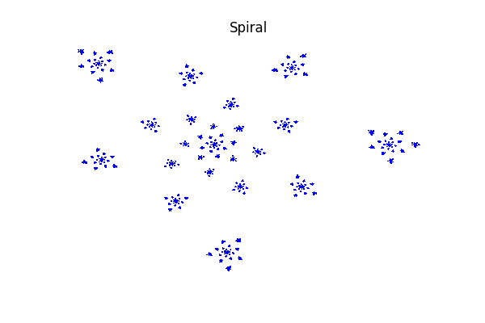
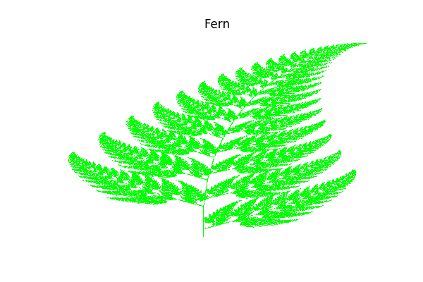
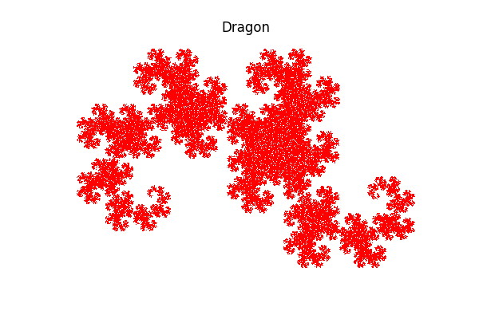
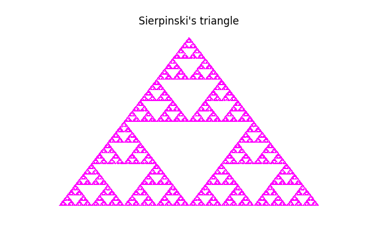

Iterated Functions System¶
This examples show how to generate fractal sets using iterated functions systems, see here for an introduction.
In [1]:
from __future__ import print_function
import openturns as ot
import math as m
Tree traversal algorithm (the chaos game)
In [2]:
def drawIFS(f_i, skip = 100, iterations = 1000, batch_size = 1, name="IFS", color="blue"):
# Any set of initial points should work in theory
initialPoints = ot.Normal(2).getSample(batch_size)
# Compute the contraction factor of each function
all_r = [m.sqrt(abs(f[1].computeDeterminant())) for f in f_i]
# Find the box counting dimension, ie the value s such that r_1^s+...+r_n^s-1=0
equation = "-1.0"
for r in all_r:
equation += "+" + str(r) + "^s"
dim = len(f_i)
s = ot.Brent().solve(ot.SymbolicFunction("s", equation), 0.0, 0.0, -m.log(dim)/m.log(max(all_r)))
# Add a small perturbation to sample even the degenerated transforms
probabilities = [r**s+1e-2 for r in all_r]
# Build the sampling distribution
support = [[i] for i in range(dim)]
choice = ot.UserDefined(support, probabilities)
currentPoints = initialPoints
points = ot.Sample(0, 2)
# Convert the f_i into LinearEvaluation to benefit from the evaluation over
# a Sample
phi_i = [ot.LinearEvaluation([0.0]*2, f[0], f[1]) for f in f_i]
# Burning phase
for i in range(skip):
index = int(round(choice.getRealization()[0]))
currentPoints = phi_i[index](currentPoints)
# Iteration phase
for i in range(iterations):
index = int(round(choice.getRealization()[0]))
currentPoints = phi_i[index](currentPoints)
points.add(currentPoints)
# Draw the IFS
graph = ot.Graph()
graph.setTitle(name)
graph.setXTitle("x")
graph.setYTitle("y")
graph.setGrid(True)
cloud = ot.Cloud(points)
cloud.setColor(color)
cloud.setPointStyle("dot")
graph.add(cloud)
return graph, s
Definition of some IFS
In [7]:
# Spiral
rho1 = 0.9
theta1 = 137.5 * m.pi / 180.0
f1 = [[0.0]*2, ot.SquareMatrix(2, [rho1 * m.cos(theta1), -rho1 * m.sin(theta1), \
rho1 * m.sin(theta1), rho1 * m.cos(theta1)])]
rho2 = 0.15
f2 = [[1.0, 0.0], rho2 * ot.IdentityMatrix(2)]
f_i = [f1, f2]
graph, s = drawIFS(f_i, skip = 100, iterations = 100000, batch_size = 1, name="Spiral", color="blue")
print("Box counting dimension=%.3f" % s)
graph
Box counting dimension=1.146
Out[7]:

In [8]:
# Fern
f1 = [[0.0]*2, ot.SquareMatrix(2, [0.0, 0.0, 0.0, 0.16])]
f2 = [[0.0, 1.6], ot.SquareMatrix(2, [0.85, 0.04, -0.04, 0.85])]
f3 = [[0.0, 1.6], ot.SquareMatrix(2, [0.2, -0.26, 0.23, 0.22])]
f4 = [[0.0, 0.44], ot.SquareMatrix(2, [-0.15, 0.28, 0.26, 0.24])]
f_i = [f1, f2, f3, f4]
graph, s = drawIFS(f_i, skip = 100, iterations = 100000, batch_size = 1, name="Fern", color="green")
print("Box counting dimension=%.3f" % s)
graph
Box counting dimension=1.834
Out[8]:

In [9]:
# Dragon
f1 = [[0.0, 0.0], ot.SquareMatrix(2, [0.5, -0.5, 0.5, 0.5])]
f2 = [[1.0, 0.0], ot.SquareMatrix(2, [-0.5, -0.5, 0.5, -0.5])]
f_i = [f1, f2]
graph, s = drawIFS(f_i, skip = 100, iterations = 100000, batch_size = 1, name="Dragon", color="red")
print("Box counting dimension=%.3f" % s)
graph
Box counting dimension=2.000
Out[9]:

In [10]:
# Sierpinski triangle
f1 = [[0.0, 0.0], ot.SquareMatrix(2, [0.5, 0.0, 0.0, 0.5])]
f2 = [[0.5, 0.0], ot.SquareMatrix(2, [0.5, 0.0, 0.0, 0.5])]
f3 = [[0.25, m.sqrt(3.0)/4.0], ot.SquareMatrix(2, [0.5, 0.0, 0.0, 0.5])]
f_i = [f1, f2, f3]
graph, s = drawIFS(f_i, skip = 100, iterations = 100000, batch_size = 1, name="Sierpinski's triangle", color="magenta")
print("Box counting dimension=%.3f" % s)
graph
Box counting dimension=1.585
Out[10]:

In [ ]: